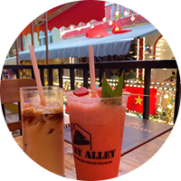
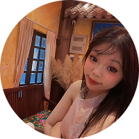

Stop, wait a minute, the way you move that, boy
You done got my heart all in it
And I just wanna be with you tonight
Boy, please, I'm a player, yeah, it's true
But I changed the game for you
I wanna see what it do
想把你抱进身体里面 不敢让你看见
嘴角那颗没落下的泪
如果这是最后一页 在你离开之前
能否让我把故事重写